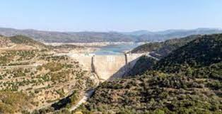

Efsaneye göre; Tanrıça Athena Çine Çayı kenarında dolaşırken kendi yansımasını suda görmüş ve yanaklarını suda çok şişkin gördüğü için çaldığı kavalı birden suya atmış. Ardından Marsyaskavalı bulmuş; zaman içerisinde Apollon’ u kıskandıracak kadar güzel çalmaya başlamış ve çok ünlü olmuş. Apollon Marsyas’ a yarışma teklif etmiş.Bu rekabet dolu yarışmanın hakemliğini ise Kral Midas yapmış. Yarışmada Marsyas harika çalmasına rağmen yenik olarak ilan edilmiş; fakat Apollon kıskançlığından Marsyas’ ın derisini yüzdürmüş. Midas’ ın ise kulaklarını eşek kulağına çevirmiş. Verdiği bu cezadan pişmanlık duyan Apollon, Marsyas’ ın bedenini ırmağa çevirmiş.

 "Aydın"a dönmek için basın
"Aydın"a dönmek için basın